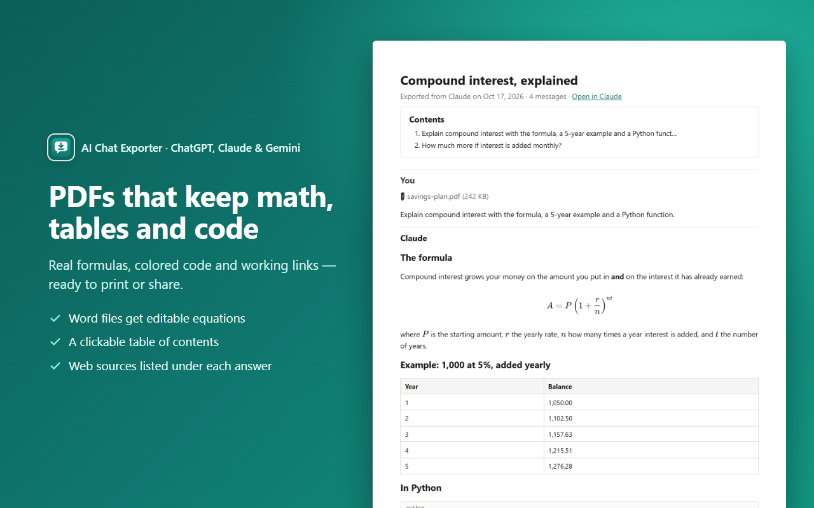

How to export a ChatGPT chat to PDF (with formulas and tables intact)
The ways ChatGPT gives you
- Copy and paste. Fine for one short answer; formulas and tables usually break, and long chats take ages.
- Print the page (Ctrl+P). You get the website's layout, menus and all; long chats may be cut off, and formulas can come out as images or code.
- Export data (Settings → Data controls → Export). OpenAI emails you a ZIP of all your chats as one HTML page plus a JSON file — good as a backup, not as a readable PDF of one chat.
The one-click way
- Install AI Chat Exporter: ChatGPT, Claude & Gemini (free).
- Open the chat on chatgpt.com.
- Click Export (next to Share), choose PDF and click the big button.
Chrome's print window opens with a clean page: choose Save as PDF as the destination (not "Microsoft Print to PDF", which makes an image-only file you can't search). Paper size follows your print settings.

What the file keeps
- Formulas as real math (Word gets editable equations), not raw code.
- Tables, code blocks with colours, headings, lists and links.
- Web sources as numbered [1] [2] links with a source list under each answer.
- Names and sizes of files you uploaded; optionally the AI's thinking summary and the time of each message.
- Only the messages you want: all, only the answers, only your prompts, or ones you pick.
Is it private?
Yes. The file is made on your own computer, inside your browser. No chat content is sent to us — there is no CarryAll server. No account, no analytics, no ads. Details in the privacy policy.
Try it free
Free with no daily limits and no sign-in. Works on chatgpt.com, claude.ai and gemini.google.com.
Add to Chrome — it's freeQuestions
Is there a limit on how many PDFs I can make?
No. Exporting one chat at a time is free and unlimited, with no sign-in.
Does it keep LaTeX formulas?
Yes. Formulas are drawn as real math in the PDF, and Word files get editable equations.
Can I export only part of a chat?
Yes: all messages, only ChatGPT's answers, only your prompts, or pick messages yourself (Shift-click selects a range).
Does it work with ChatGPT Projects and web search answers?
Yes for chats inside Projects, and web sources come out as numbered links with a source list.
I made this extension (CarryAll). The manual ways above work without it — use whichever suits you.